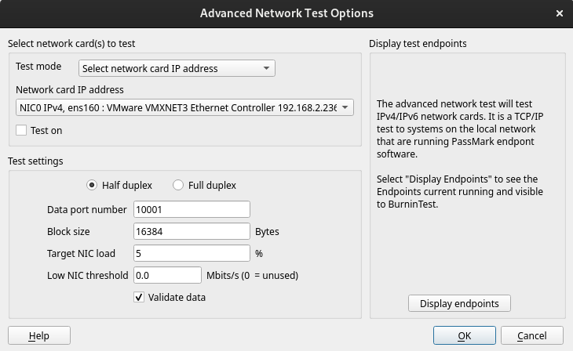

Advanced Network Preferences |
Top Previous Next |
|

Select network card(s) to test Test mode This drop down selection sets the test mode to be one of the following options: •Select Network card IP addresses: Individually specify each Network card to be tested. The test settings can be specified per Network card. •Test available IPv4 network ports: At the start of the test, BurnInTest will determine all of the available IPv4 network ports and set up a test for each Network port. The test settings are the same for all Network cards that are tested. •Test available IPv6 network ports: As above, but test available IPv6 enabled network ports only.
Note: selecting a Test mode to automatically detect the Network cards has the advantage that when testing across many systems with different network cards or IP addresses, the same BurnInTest configuration can be used. The downside is that if BurnInTest is unable to detect a network card (for example, the network card device driver failed to load), then there won't be an attempt to test the faulty card, and hence no error will be raised (unless there are no cards detected).
Network card IP address This list will show the IP of up to 20 network cards that are installed on the system and plugged in. The values in the fields below are saved for each network card and can be different for each card. IPv4 and IPv6 NICs will be displayed in the drop down. Note: BurnInTest and the Endpoints must support IPv4.
Test On Check this box the enable testing for the selected IP of a network card.
Test settings Half duplex / Full duplex Full duplex – will send and receive data during the test. Half duplex – will only send data during the test.
Data port Number This is the starting port number that is used when sending data during the test, as the testing progresses more then one port may be in use by each network card. Unless it conflicts with other services in use this should be left at the default value.
Block Size (bytes) This value is buffer size used when breaking the file into packets and sending it across the network.
Target NIC load (%) This is the required load placed on the network card during testing, the test will be throttled to maintain the necessary amount of data being sent through the network card. For example, a load of 15% for a 1000 megabit (1 gigabit) network card will be a transfer rate around 17 MB/s. Note: If this setting is high, the system may not be able to generate sufficient traffic to meet this load requirement.
Low NIC threshold A low throughput threshold value can be specified to raise a throughput error when the throughput falls below the specified level.
Validate data If this is checked then the data sent during the test will be validated , this may slow down the testing due to the CPU overhead of validation.
Display test endpoints Display endpoints This will scan and display the IPv4 and IPv6 address form each endpoint that is currently available for testing.
|